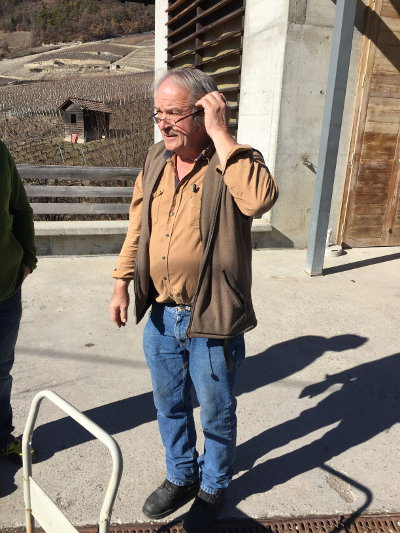

le vigneron
il y a quelques années, avec un ami, nous commandions des cartons de dégustation à quelques vignerons valaisans car nous cherchions des cépages purs tels syrah, humagne, cornalin et pinot noir entre autres merveilles nous avons découvert le cornalin
depuis, chaque année, nous en recommandons
l’année dernière, libre de mon temps de travail, j’ai décidé de mettre un visage sur ce vin : nicolas bagnoud
rarement j’ai rencontré une personne aussi fière de sa profession qu’un vigneron
avec toi il partage le bonheur de déguster son vin et de raconter sa vigne
et la satisfaction d’avoir échappé à cette route gloutonne d’amortisseurs te fera vite oublier cette conduite de rallye en dégustant les nectars qui sont issus des vignes plantées tout au tour et qui sont choyées et vinifiées par nicolas qui sait conter ses vins et te donnera envie de ne plus compter ton temps en sa compagnie
déguster
pinot gris 2015
long en bouche, sans agressivité malgré son jeune âge, appelle un deuxième verre
une harmonie magique : une sauce safranée ou un curry
chenin blanc 2015
une surprise! subtil et long en bouche, vin de gastronomie
se mariera parfaitement avec une cuisine asiatique ou un fromage de caractère
pinot noir valençon 2015
épaulé, légèrement corsé, puissant, de couleur sombre, un très bon pinot
agréable il te tapissera délicatement le palais et accompagnera un tartare
pinot noir l’ormy 2015
magnifique goût de cerises noires, plaisant et long malgré une couleur légèrement pâle un peu plus féminin que son copain du dessus
cornalin 2015
pour moi, incontestablement le meilleur *cornalin du valais pour ne pas dire le meilleur du monde !
une pure merveille qui sublimera tous les moments qu’on lui consacrera*
qui ?
Nicolas, Simon et Régis Bagnoud
Vignerons-encaveurs
Plat de Valençon 15
3978 Flanthey
027 458 60 55
079 303 18 71
info@bagnoudvins.ch
www.bagnoudvins.ch
y aller
un vrai parcours du combattant, mais quelle récompense à l’arrivée
à la sortie de l’autoroute sion est tu prends la route direction brigue et tu longes les vignes avec le train à droite
après st-léonard tu prends à gauche en direction de lens et tu attaques la montée qui sinue entre les ceps et au bout d’un moment tu te trouves devant le panneau d’un bled que l’orthographe, tu savais pas qu’elle existait : vaas et en face, deux autres panneaux dont l’un indique valençon st-clément et tu crois que t’es arrivé mais pas du tout du tout
tu continues sur cette grimpée que tu te crois sur une route de l’impossible et quand tu vois des toits en bas dessous à droite t’es presque arrivé
’y a un petit panneau bagnoud vin qui te dirige à droite, mais attention, si t’as pas une bagnole à grandes pattes tu risques de ramasser le seuil de cette vertigineuse petite dérupe
et là, au bout à droite, ton gps va te dire merci
le resto
et si tu veux bien finir cette journée et qu’après t’être savonné le gosier tu veux te remplir l’estomac reprends l’itinéraire jusqu’au seuil, tourne à gauche et arrivé sur la grande route, tourne encore à gauche et va jusqu’à chermignon d’en-haut, au milieu du village en face du panneau parking tu verras à gauche en haut une maison ancienne avec une enseigne café cher-mignon
là tu passeras un excellent moment et tes papilles vont se souvenir longtemps de cette journée enchanteresse
Café Cher-Mignon
027 483 25 96
www.cafechermignon.ch
sympa
le week-end du jeûne fédéral, il y a la fête du cornalin à flanthey